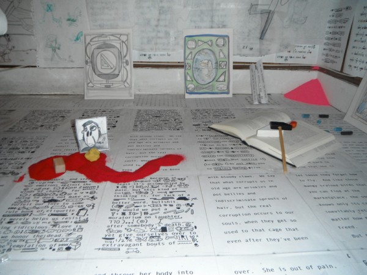

-
It’s Okay To Be Scared
by Monica Uszerowicz November 19, 2012
viewers gather at an opening. courtesy of Ferro Strouse Gallery, Brooklyn.
Artists Maximiliano Ferro and Allen W. Strouse have last names that lend themselves well to a business. “Ferro Strouse Gallery” sounds and feels like a lot of rich, moneyed things, but, like so many cultural venues in the outer boroughs, it’s nothing more than the owners’ apartment. When Max, an artist and Cooper Union graduate, needed a place to live, Allen, a writer and current Ph.D. student in English at the CUNY Graduate Center, allowed him to sleep on the floor of his Harlem apartment. Ferro never left. Eventually, the duo transported to a one-bedroom off the Broadway-Junction stop in Bushwick and opened a gallery.
If Brooklyn apartments-as-galleries offer an alternative to the traditional, sterile gallery setting, Max and Allen’s space is, in turn, an alternative to any other apartment you’ve seen utilized for this purpose. The walls are wood-paneled and there’s enough flannel and soft material to give it the feel of a basement slumber party. There’s an unaffected purity to this setup: a lack of “gallery-feel” adjustments to the apartment is precisely why the viewing experience is so effective. One gets the sense that the displayed work is viewable for art’s sake, that it needs neither platforms nor explanations. It’s inviting, even warm.
Last October, Ferro Strouse’s first show, End Vehicles: Sketches for Later Works, was a testament both to the purity of art’s existence in a welcoming setting and Ferro Strouse’s own mission. The accompanying curatorial text stated:
The sketch is a statement of faith — faith in the artist’s vision, faith in the process of art-making, and the ability to side-step time. Mediating between the realized and the latent, the sketch encourages a posture of hope in the future. In its dedication, the sketch marks out a space for love.
This could easily be a description of the bravery that comes with churning out a labor of love from your own home. Max explains:
The show was a nice parallel to the beginning of the gallery. It’s still in its sketch form. When you see a sketch, even if you don’t see the resulting sculpture, you see the idea for it. And in a way, it’s already there. It already exists in your faith that reality and time and space exist. Starting this gallery is an act of faith.
The approach is almost spiritual at its core, less about art itself and more about belief and reality and the connectedness to oneself and to the community. Ferro Strouse is not a good blueprint for galleries of the future if the end goal is stability, and less idealistic experimentation. Transcend those for a moment, though, and it all makes sense. So much culture comes through D.I.Y. venues — music, art, news — and, beyond looking and feeling better than its mainstream counterparts, they’re vital and necessary. Ferro Strouse aren’t so much riding that wave as they are excitedly, prettily surfing it. In this way, with these ideologies, the space could exist anywhere, even in a typical gallery.
At the time of this article, the artist on view at Ferro Strouse is Katie Merz, a Brooklyn-born visual artist and former professor at Cooper Union, which is where she met Max. (Of their meeting, she says, “Max was a student of mine seven years ago. He absolutely stood out from day one; he was from another, beautiful place. His imagination was a planet.”) Merz’s latest project, pieces of which are on display at the space, is a MacDowell Colony-granted collaboration with writer John D’Agata. He translated the writings of Plutarch, she translated his words into accompanying cartoons. Merz was the perfect fit for the first solo show at Ferro Strouse, given her opinion on the gallery industry: “I don’t like galleries, not big business ones,” she wrote in an e-mail,
It makes art very status quo and makes artists a bit desperate to be included in a made-up hierarchy. Ferro Strouse is free-spirited — a do-it-yourself or ‘build it and they will come’ attitude. Why wait? For what? To be included by whom? Artists are engineers of their own fate.
installation shot of Merz’s ‘The Unpleasable One / The Beginning of Language.’ courtesy of Ferro Strouse Gallery, Brooklyn.
Max and Allen are engineers of the fate of every visitor, too, and their consequential experience and understanding of the displayed works. At the opening for both Merz’s show and End Vehicles, there was no wine — only cake. Ferro Strouse has its own manifesto, including the credo:
Wine at openings is stupid. We will have cake, ice cream, pizza, and chips. Because what you really want is to have a Birthday Party for your little kid self.
This is cute and tasty, but it’s also entirely strategic. “There is a theory to the birthday party,” says Allen:
I would really like to avoid the pretension and tediousness of the wine and cheese at the opening. It’s just really boring and everyone hardens themselves with liquor and avoids real emotional involvement. It’s just fake, tedious conversation. And I think what people really want is the joy of childhood and openness. When we did that at the first opening, it was so great! It was really obvious people were having a good time.
slice of opening cake. courtesy of Ferro Strouse Gallery.
It seems counter-intuitive to remove nature’s social lubricant for a good time — drinking at a gallery feels like a natural way to become less self-conscious. But, counters Max, “I think we don’t really need wine at the opening. People think alcohol loosens them up. But I think it robs them of that exciting awkwardness that happens when you’re approaching someone you don’t know. You think you can just do whatever you want when you’re drunk, but you miss the step where you have to say, ‘Oh, this is going to be a fun adventure,’ because you just jump into it. You don’t get to press START before the game. It removes the necessary acknowledgment that it might get weird.”
That’s why the first bullet point on their manifesto is: “It’s okay to be scared — we are, too.” Explains Allen, “It’s less like a birthday party and more like the junior high party before everyone starts illegally drinking, and it’s more awkward.” Is art minus a shield so scary, though? Max and Allen think so, primarily because they feel art is massive, important, and intended to make the viewer bemused, inquisitive, or even emotional. The manifesto goes on to say, “We aren’t afraid to speak of Truth and Beauty,” and — right below that — “We are sick and tired of art that’s ‘so bad that it’s good.’ We believe in making things that are actually good.” The next bullet point: “Does that make us naïve? Yes, but we read our post-modern theory. And we’re not going to be somebody else’s leftovers.” This is where the manifesto begins to read less like a list and more like a thesis. They seem to acknowledge that purposeful art is, as they described, “naïve,” but necessary.
When I ask what it means to believe in art that is actually good, Max explains:
It connects to the first line of our manifesto: ‘It’s okay to be scared.’ I think a lot of artists take this distanced stance through multiple lenses when they make their work. You can’t really see the author. That’s exciting if you’re trying to explore ambiguous authorship, but I think people often do it because they don’t feel comfortable in their worldview. They then mask that with an attitude of sarcasm or irony. They feel that nothing is worth anything, because anything can be criticized. But you don’t have to be afraid of being criticized.
When art is ironic, or mocking itself, the conversation “ends there,” Max continues. “You’re putting yourself above it, like you already understand it. And we don’t understand anything.”
Allen agrees:
I don’t know why people who make art, and people who make galleries and museums, don’t want to actually make art. It seems like for whatever reason, believing in art is really unpopular. Every piece of art is ‘art because it’s not actually art.’ And I always feel insulted by that, because I really care about art. Art is special and important and you can actually believe in it, even if that’s weird or unpopular. It goes back to creating those junior high moments, those awkward situations. We don’t care if it’s awkward, because art is worth looking kind of goofy for.
Ferro Strouse, then, is an attempt to right the wrongs of irony, complacency and sarcasm present in the commercial art world. It’s arguable, though, that art is guilty of those traits because people are guilty of them, too. In this way, Max and Allen aren’t just unique artists or unique curators, their specific understanding of the world is a complete contrast to the mass from which they’re attempting to distinguish themselves. Max feels that it’s important not to reduce any of Ferro Strouse’s ideas to statements about what is or what isn’t art, and to take note of the fact that our contemporary situation isn’t so contemporary. Max says:
When Allen says that people don’t believe in art, [remember] that people just don’t want to believe in anything. Or they do, but they think it’s not appropriate. It’s not appropriate because everything is on thin ice right now, but everything has always been like that. People just think it’s different now. They think it’s not worth believing in anything because they’re going to be let down. That’s so sad.
If that’s the problem, turning one’s apartment into a showcase of art that believes in itself is only one solution. It seems that Max and Allen — gallery or not — embody, holistically, beliefs in oneself, the world, and, ultimately, in genuine sharing. “We have this really strong faith that it’s possible to make art and that art really matters,” Allen explains, “I really think that it’s necessary, and that it’s the only thing that makes life worth living — in a broad sense.” According to Ferro Strouse, art and life ought to be intertwined in a way that’s sincere — one cannot verily live without the other.
“I think that everybody is creative, but not everybody is a creator,” says Max,
Creativity is not going to the art store. The way you start a conversation, the way you step onto the train, the way you place your pillow as you turn, half-asleep, at night. The way you write an essay or cook food or make an image. I guess you could even be accidentally creative, but as long as you feel that you’re utilizing your mind and spirit to make something, then I think you’re being creative. I think our ability to do whatever we want is a divine gift. Right now, I’m saying things that will become ideas in your mind. That’s no joke. I take that seriously.
detail of Merz’s current show. courtesy of Ferro Strouse Gallery, Brooklyn.
Merz, whose work is on view at Ferro Strouse until next month, shares this idea, this concept that the belief in art is the belief in living, and vice versa. “Art is the life force, the chi of culture,” she says. “We think we can survive without integrity, beauty, and spirituality, but it is not possible. It is necessary, because it feeds our spirit, and our body and spirit is all we have. Art is a force; we don’t realize how powerful and necessary it is, but it keeps us humane.” Merz’s own drawings vary between hyper-kinetic, childlike cartoons and soft, abstract, pastel lines — a duality derived directly from her childhood and that Max and Allen both found appealing. In her practice, as Merz’s accompanying statement explains, “no hierarchies are implied. Lines, and respect for the changing integrity of line, is what the practice is.” Merz elaborates, “A line, a breath — you follow it and it can go in any which way. But you play along. You follow it.” That’s it: Art is breathing. Art is how you move.
Katie Merz: The Unpleasable One/The Beginning of Language is on view at Ferro Strouse Gallery until December 6, 2012, at 77 Pilling Street #2, Brooklyn.